Meridional Ray Tracing
For meridional rays tracing the QU method was implemented as it can be applied for both spherical and plane surfaces. In QU method, a meridional ray is defined by the angle U, the angles which the rays make with the optical axis, and distance Q, the vertical distance from the vertex of the surface to the ray.
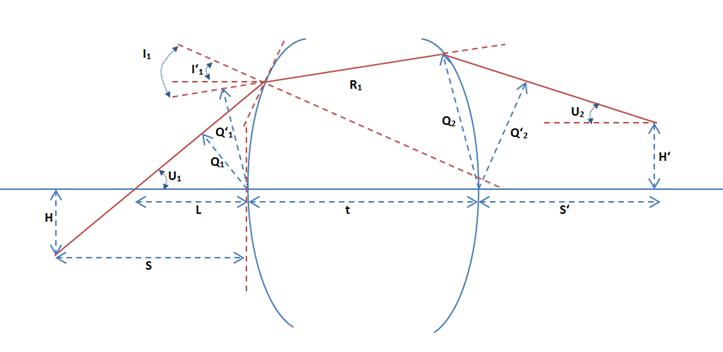
Figure above shows important parameters used in the QU algorithm
In the figure:
- R: Radius of curvature of the surface . It is +ve if the center of curvature is to the right of the vertices.
- c: Curvature of the surface at the vertex. It is +ve if the radius is +ve as c = 1/R.
- U and U’: Angles which the rays make with the optical axis (before and after the surface). The angle is +ve if the slop of the ray is +ve.
- I and I’: Angle of incidence and refraction which the ray makes with the surface normal before and after the surface. They are measured from the surface normal to the ray and are +ve if in counter clock wise direction.
- Q and Q’: The vertical distance from the vertex of the surface to the ray before and after the surface. It is +ve if the ray is above the surface.
- L: distance from the surface vertex to the intersection point of the ray with the optical axis. It is +ve if the intersection point is to the right of the surface vertex.
- S and S’: distance from the surface vertex to the ray location along the optical axis before and after the surface. It is +ve if the ray is located to the right of the surface vertex.
- H and H’: the vertical distance from optical axis to the ray location before at object and image plane. It is +ve if the point is above the optical axis.
The QU algorithm
- Express the initial meridional ray in QU format using the following relations from the position [0,Py,Pz] and direction [0,Dy,Dz] of the ray
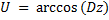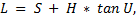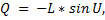
- Transfer the ray to the next surface using equations
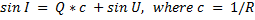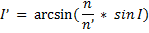
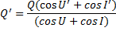
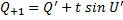
- Compute the ray position and direction from the final QU parameters using
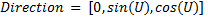
For plane surfaces:
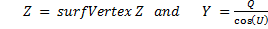
For Others:
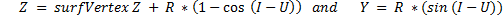
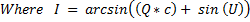 the ray angle from the surface normal
Created with the Personal Edition of HelpNDoc: Write eBooks for the Kindle